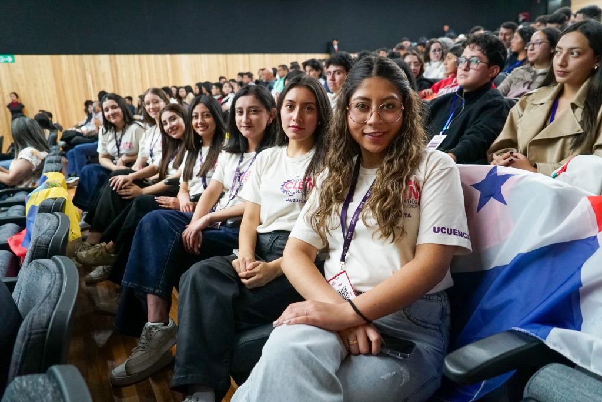

Explora tu idea
Define qué quieres resolver, para quién y qué necesitas aprender.
UNIVERSIDAD DE CUENCA · ECUADOR
Un espacio para explorar, aprender y transformar tus ideas en soluciones a través de la fabricación digital.
01 / EL LABORATORIO
La curiosidad es el punto de partida.
La fabricación digital, el siguiente paso.
El Industrial FABLAB UCuenca reúne a estudiantes, docentes, investigadores y emprendedores en torno a la creación y la experimentación tecnológica.
Desde el diseño de una pieza hasta el desarrollo de un prototipo, aquí las ideas se exploran con herramientas digitales, conocimiento compartido y aprendizaje práctico.
Somos parte de la red global Fab Labs ↗02 / TECNOLOGÍAS
Del archivo digital al objeto físico.
Descubre distintas maneras de materializar una idea.
Selecciona una tecnología para conocer su proceso y preparar tu consulta.
03 / APRENDIZAJE
Un buen prototipo empieza con una pregunta.
Y mejora con cada intento.
Define qué quieres resolver, para quién y qué necesitas aprender.
Acerca tu propuesta al mundo físico a través del diseño y la fabricación digital.
Observa el resultado, comparte lo aprendido y vuelve a intentarlo.
04 / COMUNIDAD

UNIVERSIDAD + INDUSTRIA + SOCIEDAD
La presentación del FABLAB durante el CLEIN 2025 abrió un nuevo espacio para conectar ciencia, creatividad y tecnología en la Universidad de Cuenca.
Un punto de encuentro para quienes quieren investigar, emprender y construir conocimiento a través de la práctica.
Conecta con nuestra red ↗05 / EMPECEMOS
Cuéntanos qué tienes en mente.
Exploremos juntos el siguiente paso.